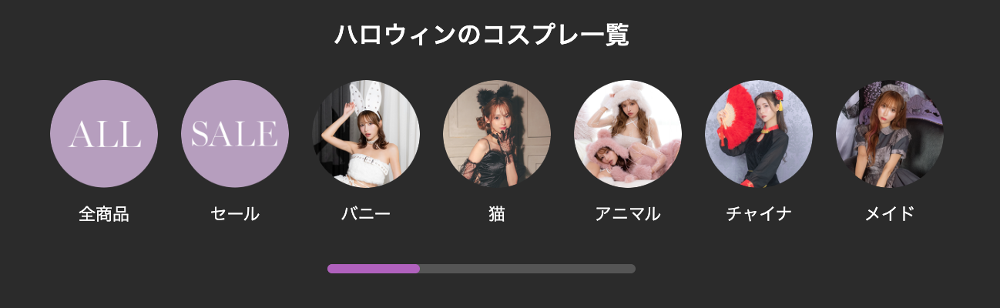
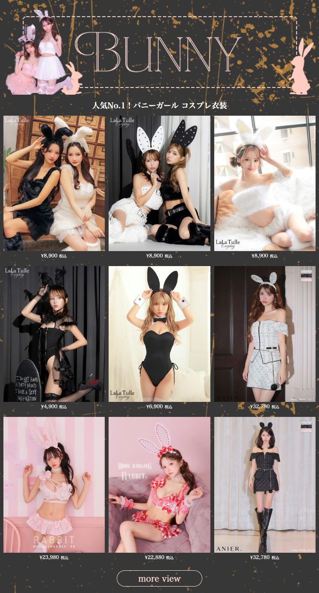
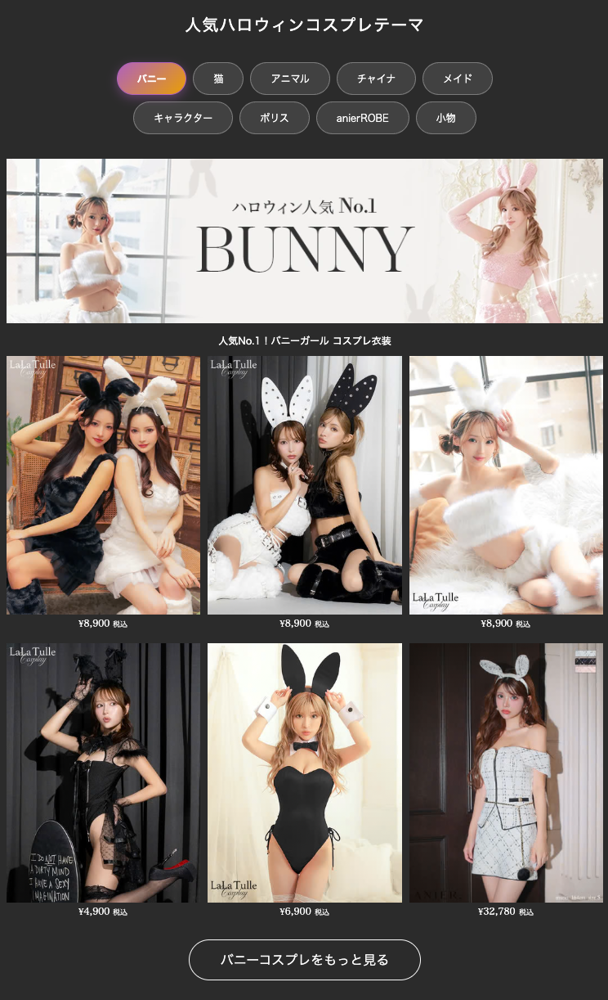
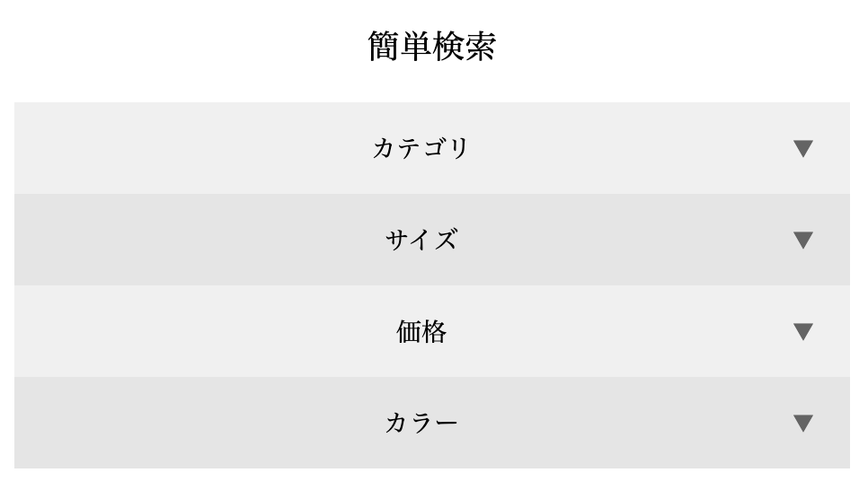
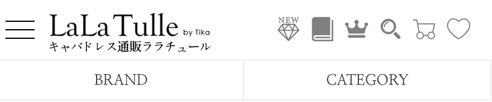

2023.09–2025.08
縦に長い商品一覧
各カテゴリに商品を9点ずつ並べていたため、
下の商品まで何度もスクロールする必要がありました。
LaLaTulle
特集、ホーム、商品ページを見直しました。データから使い方を調べ、画面づくりと変更後の確認まで担当しました。

デザインを見直して商品一覧へ進みやすくしました。検索順位も改善しました。
カテゴリを横にスクロールできるメニューにまとめ、
全商品とセールへのリンクを追加しました。


BEFORE


AFTER


2023.09–2025.08
各カテゴリに商品を9点ずつ並べていたため、
下の商品まで何度もスクロールする必要がありました。

2025.09–2025.10
各カテゴリの商品を9点から6点に減らし、
次のカテゴリまでのスクロールを短くしました。

2025.11
カテゴリをタブにまとめ、ページがずっと短くなりました。見たいカテゴリへすぐ切り替えられます。

–

ページの最後に人気商品を載せ、
続けて商品を探せるようにしました。

カテゴリ、サイズ、色などから探せるようにしました。

衣装の選び方や着る場面のよくある質問に答え、検索向けのFAQPageデータも追加しました。
ハロウィンシーズン・10月1日〜31日
2024年との比較
商品リスト閲覧数
+54%商品詳細閲覧数
+30%売上
+9.33%2025年との比較
直帰率
−8.88 pt2025年・2024年との比較
検索・お気に入り・カートは上段、新作・ランキングは下段へ。
ブログへのリンクはホームの最新記事バナーに移しました。
買い物でよく使う機能を考え、ヒートマップでどの項目が多く押されていたかも確認しました。


Google Analytics ファネルデータ探索・2026年2月3〜9日と2月10〜16日の比較
ホーム訪問者の検索到達率
+18.8%ホーム訪問者のカート到達率
+21.4%ホームを見た人のうち、検索やカートに進んだ人の割合を前後で比べました。
セール対象外の主力ブランドを大きく見せ、
訪れる人が少なかったセールはその下に移しました。
Clarityでは、スマホで上のリンクと中段左の画像カテゴリがよく押されていました。検索欄・キーワード・カテゴリを最初の画面にまとめました。


変更前：2026.02.03–09 ／ 変更後：02.10–16
簡単検索のタップ数 / 100PV
Microsoft Clarity
ホーム訪問者のミニドレス到達率
Google Analytics
Clarity・簡単検索10カテゴリの合計。総タップ数は−6.9%。
Google Analytics・ホームからミニドレスページまでのファネル。
同じ会社の他ブランドに比べ、商品をカートに入れる割合が低く、ページを離れる割合が高めでした。そこで、直近24時間に商品を見た人数を表示し、購入が増えるかを調べました。

設置とテスト：2025.07.23–08.21 / 分析：08.20–21
Google Analytics・A/Bテストで見られた差
ChatGPTを使い、購入率の差を2標本比率のZ検定で調べました。どの比較でもp値は基準の0.05を上回ったため、Firebaseの運用費も考えて表示をやめました。